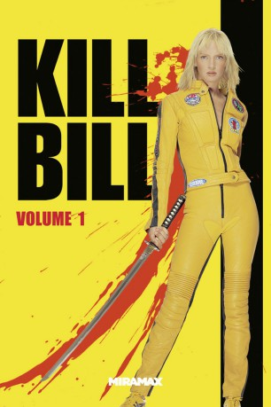

#1301 Kill Bill The Whole Bloody Affair Dr. Sapirstein Fan Edit
 
 IMDB-Wertung: 8.1 / 10
IMDB-Wertung: 8.1 / 10  IMDB-TOP-Platzierung: 173
IMDB-TOP-Platzierung: 173  Metascore: 69
Metascore: 69 
Eine kühl wirkende Blondine erwacht nach vier Jahren Koma im Krankenhaus. Erinnerungen voller Schmerz erscheinen in ihrem Kopf - der Tag ihrer Hochzeit ist das Letzte, woran sie sich erinnern kann. Es sollte der schönste Tag ihres Lebens werden, doch stattdessen endet er in einem Massaker. Ihr ehemaliger Liebhaber und Auftraggeber ließ die Hochzeitsgesellschaft von seinem Killerkommando exekutieren und jagte ihr selbst eine Kugel in den Kopf. Jetzt beherrscht sie nur noch ein Gefühl: der eiskalte Rachedurst gegenüber denen, die ihr Leben zerstört haben. Sie beginnt ihren Vergeltungsfeldzug und hinterlässt über zwei Kontinente eine blutige Schneise in den Reihen ihrer Feinde.
Jahr: 2003
Dauer: 111 Minuten
FSK: 18
Land: USA Studio: MiramaxTonspuren: DTS - ,
Untertitel: Deutsch,
Auflösung: 720p (1280x720) Größe: 12595 MB
Genre: Action, Thriller, Krimi
Regisseur:  Quentin Tarantino
Quentin Tarantino
Drehbuch: Quentin Tarantino, Quentin Tarantino, Uma Thurman
Soundtrack: RZA
Darsteller:
 Uma Thurman als The Bride
Uma Thurman als The Bride Lucy Liu als O-Ren Ishii
Lucy Liu als O-Ren Ishii Vivica A. Fox als Vernita Green
Vivica A. Fox als Vernita Green Daryl Hannah als Elle Driver
Daryl Hannah als Elle Driver David Carradine als Bill
David Carradine als Bill Michael Madsen als Budd
Michael Madsen als Budd Julie Dreyfus als Sofie Fatale
Julie Dreyfus als Sofie Fatale Chiaki Kuriyama als Gogo Yubari
Chiaki Kuriyama als Gogo Yubari Shin'ichi Chiba als Hattori Hanzo
Shin'ichi Chiba als Hattori Hanzo Chia-Hui Liu als Johnny Mo
Chia-Hui Liu als Johnny Mo Michael Parks als Earl McGraw
Michael Parks als Earl McGraw Michael Bowen als Buck
Michael Bowen als Buck Jun Kunimura als Boss Tanaka
Jun Kunimura als Boss Tanaka James Parks als Edgar McGraw
James Parks als Edgar McGraw Jonathan Loughran als Trucker
Jonathan Loughran als Trucker Kazuki Kitamura als Crazy 88 #2
Kazuki Kitamura als Crazy 88 #2- Julie Manase als Crazy 88 #6, Girl
- Ambrosia Kelley als Nikki Bell
 Christopher Allen Nelson als The Groom , uncredited
Christopher Allen Nelson als The Groom , uncredited- Kenji Ohba als Bald Guy, Sushi Shop
- Yuki Kazamatsuri als Proprietor
- Sakichi Satô als Charlie Brown
- Yoshiyuki Morishita als Tokyo Business Man
- Tetsuro Shimaguchi als Crazy 88 #1, Miki
- Yôji Tanaka als Crazy 88 #3
- Issei Takahashi als Crazy 88 #4
- Sô Yamanaka als Crazy 88 #5
 Akaji Maro als Boss Ozawah
Akaji Maro als Boss Ozawah- Goro Daimon als Boss Honda
- Shun Sugata als Boss Benta
- Zhang Jin Zhan als Boss Orgami
- Xiaohui Hu als Young 88, Spanked Boy
- Sachiko Fujii als The 5, 6, 7, 8's
- Yoshiko Yamaguchi als The 5, 6, 7, 8's
- Ronnie Yoshiko Fujiyama als The 5, 6, 7, 8's
- Shu Lan Tuan als Okinawa Airline Ticket Agent
- Ai Maeda als O-Ren, anime sequence
- Naomi Kusumi als Boss Matsumoto, anime sequence
 Hikaru Midorikawa als Pretty Riki, anime sequence
Hikaru Midorikawa als Pretty Riki, anime sequence- Michael Kuroiwa als Crazy 88 Fighter , uncredited
- Stevo Polyi als Tim , uncredited
Datei: X:\FSK18-Collections\Kill Bill\Kill Bill The Whole Bloody Affair Dr. Sapirstein Fan Edit (2003, FSK18, 1280x720).mkv seit 16.06.2015
Festplatte: FSK18
 Es gibt insgesamt 7 Filme in der Gruppe 'FSK18-Collections\Kill Bill'
Es gibt insgesamt 7 Filme in der Gruppe 'FSK18-Collections\Kill Bill'